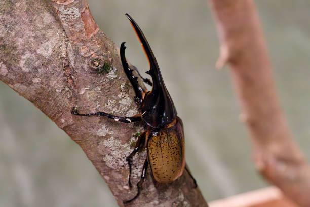
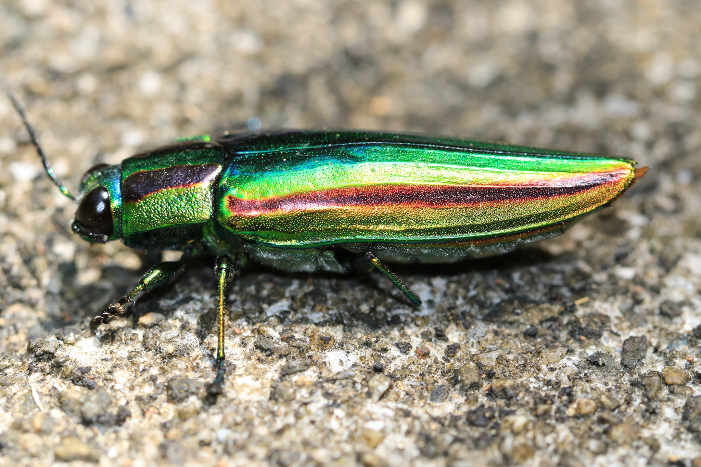
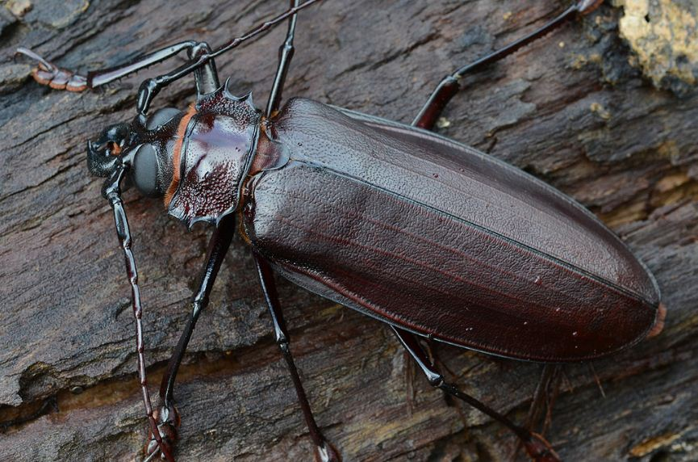
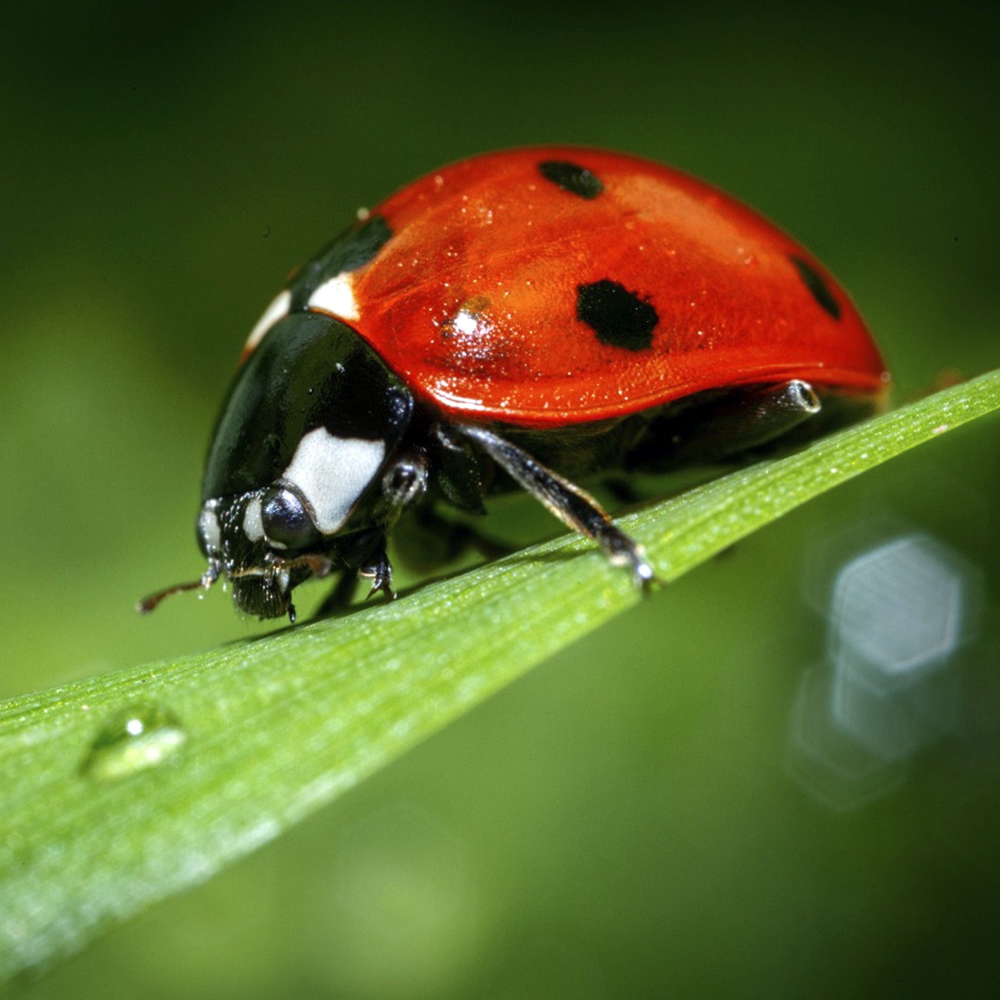
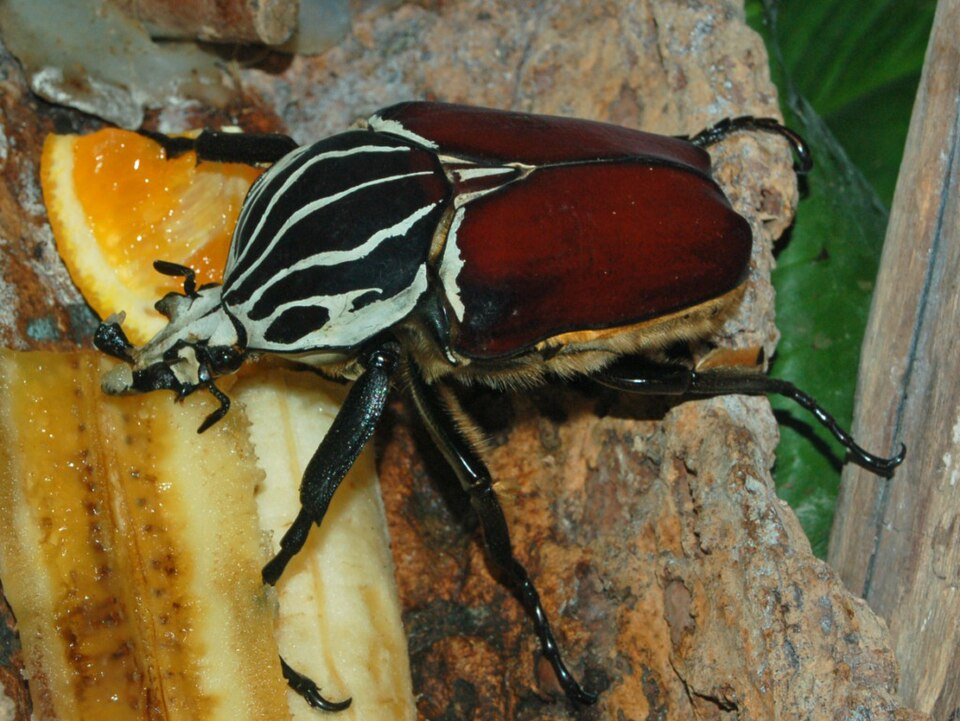
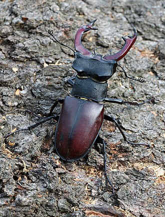
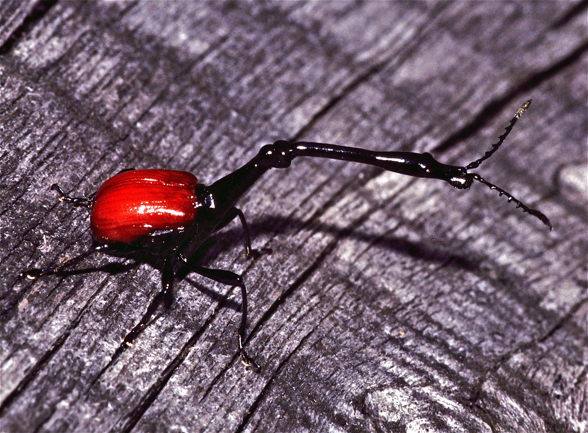

O mundo fascinante dos Coleoptera
Com mais de 400 mil espécies descritas, os besouros são a ordem animal mais diversificada do planeta.
Sobre os Besouros
O que são os besouros?
Os besouros compõem a ordem Coleoptera, cujo nome vem do grego koleos (bainha) e pteron (asa), referindo-se ao par de asas anteriores endurecidas, chamadas élitros, que protegem as asas membranosas por baixo. Eles são insetos holometábolos, ou seja, passam por metamorfose completa: ovo → larva → pupa → adulto.
Estima-se que existam mais de 400 mil espécies catalogadas, representando aproximadamente 40% de todos os insetos conhecidos e cerca de 25% de todas as formas de vida animal descritas pela ciência. Ocorrem em quase todos os ambientes do planeta, com exceção dos oceanos e das regiões polares extremas.


Classificação taxonômica
Os besouros pertencem ao filo Arthropoda, classe Insecta. Dentro de Coleoptera, são divididos em quatro subordens principais: Adephaga, Archostemata, Myxophaga e Polyphaga. A subordem Polyphaga é a mais diversa, contendo mais de 90% das espécies de besouros.
| Nível taxonômico | Classificação |
|---|---|
| Reino | Animalia |
| Filo | Arthropoda |
| Classe | Insecta |
| Ordem | Coleoptera |
| Subordens | Adephaga, Archostemata, Myxophaga, Polyphaga |
Estrutura corporal
O corpo de um besouro adulto é dividido em três tagmas: cabeça, tórax e abdome. A cabeça apresenta antenas articuladas (que variam em formato conforme a espécie), olhos compostos e peças bucais adaptadas ao hábito alimentar. O tórax é composto por três segmentos — protórax, mesotórax e metatórax — e carrega seis patas e os dois pares de asas.
Os élitros são a característica mais marcante da ordem: são as asas anteriores modificadas em estruturas rígidas e esclerotizadas que se encontram na linha mediana do corpo quando o inseto está em repouso, formando uma "couraça". As asas posteriores, membranosas e dobradas sob os élitros, são usadas para o voo. Algumas espécies, como os besouros do solo (família Carabidae), são completamente ápteras — não voam.
💡 Você sabia?
O escaravelho-do-esterco (Scarabaeus sacer), sagrado para os antigos egípcios, é capaz de rolar uma bola de esterco até 10 vezes o seu próprio peso e utiliza a Via Láctea como bússola para se orientar à noite.
Alimentação e habitat
Os besouros são extremamente versáteis quanto à dieta. Existem espécies herbívoras (que se alimentam de folhas, sementes, raízes), predadoras (que caçam outros insetos e invertebrados), detritívoras (consumidoras de matéria orgânica em decomposição), fungívoras e coprófagas (que se alimentam de fezes). Essa plasticidade alimentar é um dos fatores que explicam seu sucesso evolutivo.
Quanto ao habitat, podem ser encontrados em florestas tropicais, desertos, campos, ambientes aquáticos de água doce, cavernas e solos agrícolas. Muitas espécies são indicadoras de qualidade ambiental: a presença ou ausência de determinadas espécies revela o estado de conservação do ecossistema local.
Importância ecológica e econômica
Os besouros desempenham papéis ecológicos fundamentais nos ecossistemas. Como polinizadores, decompositores e predadores, participam ativamente dos ciclos de nutrientes e do controle biológico de pragas. Espécies da família Coccinellidae (joaninhas) são amplamente utilizadas na agricultura como agentes de controle biológico, pois se alimentam de pulgões e cochonilhas.
Por outro lado, algumas espécies são pragas agrícolas e florestais de impacto econômico significativo. O bicudo-do-algodoeiro (Anthonomus grandis), por exemplo, é um dos insetos mais prejudiciais à cotonicultura no mundo.
Na ciência, os besouros são modelos importantes para estudos evolutivos e biomiméticos. O escaravelho Namib inspira tecnologias de coleta de água em regiões áridas graças à nanoestrutura de sua superfície corporal.
↑ Voltar ao topoGaleria de Fotos
A diversidade visual dos besouros é impressionante. Confira abaixo uma seleção de espécies de diferentes partes do mundo.






Referências
- GRIMALDI, D.; ENGEL, M. S. Evolution of the Insects. Cambridge University Press, 2005.
- LAWRENCE, J. F.; ŚLIPIŃSKI, A. Australian Beetles. CSIRO Publishing, 2013.
- WIKIPÉDIA. Coleoptera. Disponível em: https://pt.wikipedia.org/wiki/Coleoptera . Acesso em: maio 2026.
- BUGGUIDE. Order Coleoptera. Disponível em: https://bugguide.net/node/view/59 . Acesso em: maio 2026.
- WIKIMEDIA SPECIES. Calosoma sycophanta. Disponível em: https://species.wikimedia.org/wiki/Calosoma_sycophanta . Acesso em: maio 2026.
- WIKIPÉDIA. Trachelophorus giraffa. Disponível em: https://pt.wikipedia.org/wiki/Trachelophorus_giraffa . Acesso em: maio 2026.
- WIKIPÉDIA. Vaca-loura. Disponível em: https://pt.wikipedia.org/wiki/Vaca-loura . Acesso em: maio 2026.
- WIKIPÉDIA. Goliathus goliatus. Disponível em: https://pt.wikipedia.org/wiki/Ficheiro:Scarabaeidae_-_Goliathus_goliatus.JPG . Acesso em: maio 2026.
- ANTDERGROUND. Coccinella septempunctata. Disponível em: https://antderground.com/pt-br/produto/coccinella-septempunctata/ . Acesso em: maio 2026.
- PORTAL AMAZÔNIA. Besouro gigante. Disponível em: https://portalamazonia.com/amazonia-de-a-a-z/b/besouro-gigante/ . Acesso em: maio 2026.
- INATURALIST. Agrypnus murinus. Disponível em: https://www.inaturalist.org/geo_model/360062/explain . Acesso em: maio 2026.
- ISTOCK. Dynastes hercules. Disponível em: https://www.istockphoto.com/br/fotos/dynastes-hercules . Acesso em: maio 2026.
Morfologia
Esta seção será desenvolvida em trabalhos futuros.
Curiosidades
Esta seção será desenvolvida em trabalhos futuros.